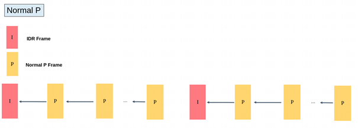
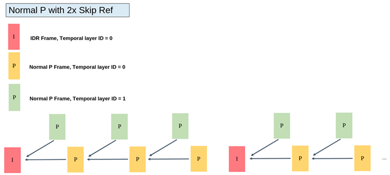
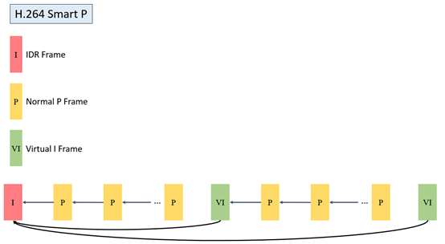

2. GOPStructureand ¶
2.1. GOPMode Table¶
Mode |
Description |
|---|---|
NormalP |
P beforeRefer tobefore Refer to |
SmartP |
P beforeRefer tobefore Refer to ，VI beforeRefer toIDR |
2.2. NormalPMode Structure Description¶
2.2.1. NormalPMode Structure Description¶
NormalP（ is IPPP ） in 、 Commonof GOP（Group of Pictures）Structure， Type of before Refer to Mode
in need under， UseNormalPMode
NormalPModeGOPStructure，as followsFigure 。


2.2.2. NormalMode Usage¶
RelatedInterface
CVI_VENC_CreateChn
Related
VENC_CHN_ATTR_S::stGopAttr.enGopMode = VENC_GOPMODE_NORMALP
VENC_CHN_ATTR_S::stRcAttr.u32Gop = 60
VENC_CHN_ATTR_S::stGopAttr.stNormalP.s32IPQpDelta is3， Value I ，Image
2.3. SmartPModeGOPStructureDescriptionandUse ¶
2.3.1. SmartPMode Structure Description¶
SmartP is of Mode，Through Virtual-I and Refer to ，in of （IDR）of Frequency
P
P ： Refer to， beforeRefer tobefore （ NormalP）
Virtual-I ： Refer to， beforeRefer to ofIDR （ ）
Through IDR of ， of
- and
：If 、 etc. 、 of
can
：If or （If ），Virtual-I under
：need Refer to
SmartPModeGOPStructure，as followsFigure 。


2.3.2. SmartPMode Usage¶
RelatedInterface
CVI_VENC_CreateChn
Related
VENC_CHN_ATTR_S::stGopAttr.enGopMode = VENC_GOPMODE_SMARTP
VENC_CHN_ATTR_S::stGopAttr.stSmartP.u32BgInterval = 300 // 10secs for fps=30
VENC_CHN_ATTR_S::stRcAttr.u32Gop = 60 // virtual I interval，2secs for fps=30
VENC_CHN_ATTR_S::stRcAttr.u32StatTime = 10 // secs
VENC_CHN_ATTR_S:: stGopAttr.stSmartP.s32BgQpDelta = 2
VENC_CHN_ATTR_S:: stGopAttr.stSmartP.s32ViQpDelta = 0
2.4. not GOPStructureBuffer ¶
Mode |
DDR |
|
|---|---|---|
NormalP |
2*PicSize |
|
SmartP |
3*PicSize |
|
Need to before ofYUVwithandRefer to ofYUV， NormalP ， Refer to before P ， SmartP before P of ， Need to Refer to of
H.264
PicSize= FrameBufSize + mvBufSize + recBufSize
H.265
PicSize= FrameBufSize + mvBufSize + recBufSize
PleaseRefer to 《CV184x Software Refer to》of“ ”Chapter